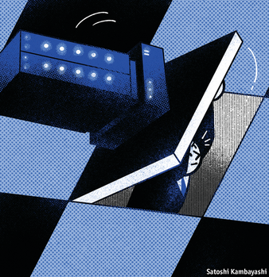

2020-12-07T14:45:30+00:00
梧桐
机器卡壳
最近一次“量化地震”的教训
输给一台机器是什么感觉？1997年，世界上最优秀的国际象棋选手加里·卡斯帕罗夫（Garry Kasparov）被一台价值千万美元的IBM超级计算机“深蓝”打败。20年后，他围绕这段经历写下了《深思》（Deep Thinking）一书。其中让人感受最深的是，每一场比赛都如此让人精疲力竭。即使像卡斯帕罗夫这样伟大的棋手也会感到疲倦和沮丧。自我怀疑随之滋生。相比之下，深蓝只需要偶尔重启一次。
现在换位想一下。击败了机器又是什么感觉？到今年年底，哪怕是最不精明的投资者，只要买入并持有一支指数基金，就可能取得这样的胜利。因为对于使用强大的计算机从市场数据中寻找模式来预测未来价格的“量化”基金来说，2020年是惨烈的一年。买入近期表现好的股票、卖出近期表现差的股票的“多空”动量策略曾是今年表现较好的量化投资策略之一。然而，11月9日有关一种新冠肺炎疫苗有效的消息传出时，该策略经历了有史以来最糟糕的一天。
量化交易依赖历史数据。如果发生的事件没有先例，例如在全球疫情中一种疫苗问世，它们就有麻烦了。几个量化对冲基金无疑在经受巨亏。而一些自选型基金或许大赚了一笔。人类交易员能够击败机器的领域已经不多了，但11月9日表明这仍然是可能的。就当这是人类取得的一次小小胜利吧。
颇为讽刺的是，动量交易策略恰恰是利用了人类的弱点。其一是“保守性偏差”。投资者往往过分坚持自己先前的观点，面对新信息时不能及时改变看法。他们可能会过分强调用股票的买入价格来衡量其真实价值，因此会过早地卖掉牛股，而又过久地持有表现平庸的股票。另一种相反的倾向是根据过往的成功推断未来。因此除了对新消息反应迟缓之外，人们也会反应过度。动量交易正是试图利用这一点。
包括动量交易在内的许多“多空”策略都是根据特定的属性为股票排序，然后买入该类别当中的前十分位（或五分位），同时卖出垫底的股票。这种操作需要机器完成。单凭人类投资组合经理的薄弱能力无法迅速筛选成千上万的证券。这需要通过算法来确定并微调出一个最优的筛选期。同时也需要快速、无缝地访问自动交易平台和市场数据。这样的工作是人的双手和大脑无法胜任的。
在国际象棋中，机器运算的蛮力最终胜出。在投资中，机器交易的优势是能够处理大量机器可读的信息，例如一笔笔的股票交易价格。最强大的机器甚至还能读懂非结构化数据（“大数据”）。但是，即便最聪明的机器面对疫苗诞生这样的事件也会不知所措。人类仍有一个优势。他们能够利用心理捷径来筛选无限的可能性。他们可以想象过去从未出现过的情景——比如，“都已经投入这么多钱、付出这么多努力了，一种疫苗也许很快就会面世”；以及“有关这种疫苗的消息可能会引发‘居家’股票的抛售和‘出门’股票的反弹”。
但为何价格波动如此剧烈？一位量化交易专家表示，一条很好的经验法则是，一种策略的交易速度越快，可供操作的市场容量就越小。像动量交易这样的快速交易策略需要有高流动性的市场来控制交易成本。可能会有太多交易采用这种策略。一旦量化基金蒙受损失，可能会根据风险管理规则的要求被迫平仓。由于所有人都在同一时间争相离场，就会导致价格的极端波动。这也是先进的量化基金不断演化的原因之一。它们寻求独特的数据集来训练机器，或者试图采用新的解析方法从市场噪音中辨别出别人无法察觉的微弱信号。
量化交易这次栽了跟头，但丝毫没有退让。它们的领地只会越来越大。自选交易——也就是人类的聪明才智——相对于机器的优势将逐渐缩小。值得一提的是，1996年卡斯帕罗夫第一次与深蓝交手时，他赢了。而现在，正如他指出的，你能免费下载的国际象棋程序都比当年的深蓝强大多了。趁我们还能击败机器的时候，细细品味这胜利的滋味吧。
2020-12-07T14:45:30+00:00
Buttonwood
Sand in the gears
The lesson from the most recent quant quake
WHAT IS IT like to lose to a machine? In 1997 the world’s best chess player, Garry Kasparov, was beaten by Deep Blue, a $10m super-computer made by IBM. Twenty years later he wrote “Deep Thinking”, a book about the experience. What comes across vividly is how exhausting each game was. Chess players, even great ones like Mr Kasparov, get tired and frustrated. Doubts begin to creep in. By contrast, Deep Blue just needed the occasional reboot.
Now turn the tables. What is it like to win against the machines? By New Year’s Eve the least smart buy-and-hold investor in an index fund might be able to boast of such a victory. For 2020 has been rotten for “quant” funds, which use powerful computers to sift market data for patterns that might predict future prices. “Long-short” momentum—buying recent winners and selling recent losers—had been one of quant’s better strategies this year. Yet on November 9th, when news broke of an effective vaccine for covid-19, it had its worst ever day.
Quants rely on history. If something happens that is without precedent, such as a vaccine in a pandemic, they have a problem. No doubt a few quant hedge funds are nursing heavy losses. And perhaps a few discretionary funds have made a killing. The terrain on which human traders can beat the machines is much diminished. But November 9th shows it is still possible. Chalk it up as a small victory for the species.
It is no small irony that momentum trading takes advantage of human weaknesses. One of these is “conservatism bias”. Investors tend to stick to prior views too rigidly and change them only slowly in response to new information. They may give undue emphasis to the price paid for a stock as a marker of its true value and, as a consequence, sell winning stocks too soon and hang on to dud stocks for too long. There is also a contrasting tendency to extrapolate past success. So as well as under-reacting to news, people also over-react to it. Momentum trading seeks to exploit this.
A lot of long-short strategies, including momentum, rank stocks by a particular attribute and then buy the top decile (or quintile) of the group and sell the bottom one. This requires machines. Sorting through thousands of securities quickly is beyond the meagre talents of a living, breathing portfolio manager. It requires algorithms that first establish and then fine-tune the optimal period over which to do the sorting. And it needs speedy and seamless access to automatic trading platforms and market data. You would not want to do all this by hand and brain.
In chess, the brute force of computing power eventually wins out. In investing, the strength of synthetic traders is in dealing with reams of information that is machine-readable, such as tick-by-tick stock prices. The most powerful machines can make sense even of unstructured (“big”) data. But an event like the discovery of a vaccine can flummox even the smartest of them. Humans retain an edge. They are able to winnow down endless possibilities using mental shortcuts. They can imagine scenarios that the past has not thrown up—scenarios such as “a vaccine may become available soon, given the amount of money and effort being thrown at it”; and “news of such a vaccine might spark a sell-off in ‘stay-at-home’ shares and a rally in ‘get-out-of-the-house’ shares”.
But why were the moves in prices so dramatic? A good rule of thumb, says one quant guru, is that the faster you trade, the less capacity there is for your strategy. A speedy trading strategy, such as momentum, relies on liquid markets to keep turnover costs in check. The strategy can become crowded. And when the quants suffer losses, they may be forced by risk-management rules to close their positions. As everyone rushes to get out at the same time, it makes for extreme price movements. This is in part why sophisticated quant funds are constantly evolving. They look for unique datasets on which to train their machines. Or they try to come up with new ways to parse weaker signals that others cannot detect in the market noise.
The quants have had a rough time, but they are hardly in retreat. Their domain will only expand. The margin of advantage for discretionary trading—for human ingenuity, in other words—will shrink. It is worth remembering that the first time Mr Kasparov played against Deep Blue, in 1996, he won. Now, as he has pointed out, you can download free chess engines that are far more powerful. We should savour victories over the machines while we can.
2020-12-07T14:45:30+00:00
梧桐
機器卡殼
最近一次“量化地震”的教訓
輸給一台機器是什麼感覺？1997年，世界上最優秀的國際象棋選手加里·卡斯帕羅夫（Garry Kasparov）被一台價值千萬美元的IBM超級計算機“深藍”打敗。20年後，他圍繞這段經歷寫下了《深思》（Deep Thinking）一書。其中讓人感受最深的是，每一場比賽都如此讓人精疲力竭。即使像卡斯帕羅夫這樣偉大的棋手也會感到疲倦和沮喪。自我懷疑隨之滋生。相比之下，深藍只需要偶爾重啟一次。
現在換位想一下。擊敗了機器又是什麼感覺？到今年年底，哪怕是最不精明的投資者，只要買入並持有一支指數基金，就可能取得這樣的勝利。因為對於使用強大的計算機從市場數據中尋找模式來預測未來價格的“量化”基金來說，2020年是慘烈的一年。買入近期表現好的股票、賣出近期表現差的股票的“多空”動量策略曾是今年表現較好的量化投資策略之一。然而，11月9日有關一種新冠肺炎疫苗有效的消息傳出時，該策略經歷了有史以來最糟糕的一天。
量化交易依賴歷史數據。如果發生的事件沒有先例，例如在全球疫情中一種疫苗問世，它們就有麻煩了。幾個量化對沖基金無疑在經受巨虧。而一些自選型基金或許大賺了一筆。人類交易員能夠擊敗機器的領域已經不多了，但11月9日表明這仍然是可能的。就當這是人類取得的一次小小勝利吧。
頗為諷刺的是，動量交易策略恰恰是利用了人類的弱點。其一是“保守性偏差”。投資者往往過分堅持自己先前的觀點，面對新信息時不能及時改變看法。他們可能會過分強調用股票的買入價格來衡量其真實價值，因此會過早地賣掉牛股，而又過久地持有表現平庸的股票。另一種相反的傾向是根據過往的成功推斷未來。因此除了對新消息反應遲緩之外，人們也會反應過度。動量交易正是試圖利用這一點。
包括動量交易在內的許多“多空”策略都是根據特定的屬性為股票排序，然後買入該類別當中的前十分位（或五分位），同時賣出墊底的股票。這種操作需要機器完成。單憑人類投資組合經理的薄弱能力無法迅速篩選成千上萬的證券。這需要通過算法來確定並微調出一個最優的篩選期。同時也需要快速、無縫地訪問自動交易平台和市場數據。這樣的工作是人的雙手和大腦無法勝任的。
在國際象棋中，機器運算的蠻力最終勝出。在投資中，機器交易的優勢是能夠處理大量機器可讀的信息，例如一筆筆的股票交易價格。最強大的機器甚至還能讀懂非結構化數據（“大數據”）。但是，即便最聰明的機器面對疫苗誕生這樣的事件也會不知所措。人類仍有一個優勢。他們能夠利用心理捷徑來篩選無限的可能性。他們可以想象過去從未出現過的情景——比如，“都已經投入這麼多錢、付出這麼多努力了，一種疫苗也許很快就會面世”；以及“有關這種疫苗的消息可能會引發‘居家’股票的拋售和‘出門’股票的反彈”。
但為何價格波動如此劇烈？一位量化交易專家表示，一條很好的經驗法則是，一種策略的交易速度越快，可供操作的市場容量就越小。像動量交易這樣的快速交易策略需要有高流動性的市場來控制交易成本。可能會有太多交易採用這種策略。一旦量化基金蒙受損失，可能會根據風險管理規則的要求被迫平倉。由於所有人都在同一時間爭相離場，就會導致價格的極端波動。這也是先進的量化基金不斷演化的原因之一。它們尋求獨特的數據集來訓練機器，或者試圖採用新的解析方法從市場噪音中辨別出別人無法察覺的微弱信號。
量化交易這次栽了跟頭，但絲毫沒有退讓。它們的領地只會越來越大。自選交易——也就是人類的聰明才智——相對於機器的優勢將逐漸縮小。值得一提的是，1996年卡斯帕羅夫第一次與深藍交手時，他贏了。而現在，正如他指出的，你能免費下載的國際象棋程序都比當年的深藍強大多了。趁我們還能擊敗機器的時候，細細品味這勝利的滋味吧。